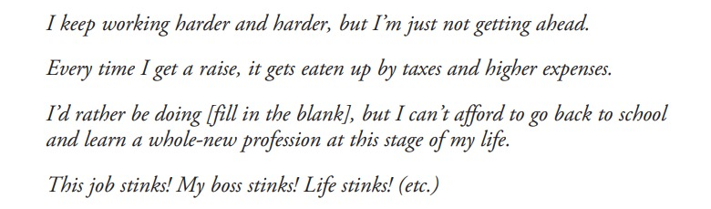

The cashflow quadrant represents the different methods by which a cash income is generated.
E = Employee
S = Self-employed or Small-business owner
B = Business owner
I = Investor
Which quadrant do you live in? In other words, from which quadrant do you receive the majority of the income on which you live?
The majority of us learn, live, love, and leave this life entirely within the E quadrant. Our educational system and culture train us, from the cradle to the grave, in how to live in the world of the E quadrant.
The operating philosophy for this world is what my poor dad—my real father—taught me, and what you probably learned, too, when you were growing up: Go to school, study hard and get good grades, and get a good job with benefits at a great company.
Driven by the urge for more freedom and self-determination, a lot of people migrate from the E quadrant to the S quadrant. This is the place where people go to “strike out on their own”.
The S quadrant includes a huge range of earning power, all the way from the teenage freelance babysitter or landscaper just starting out in life to the highly paid private-practice lawyer, consultant, or public speaker.
But whether you’re earning $8 an hour or $80,000 a year, the S quadrant is typically a trap. You may have thought you were “firing your boss,” but what really happened is that you just changed bosses. You are still an employee. The only difference is that when you want to blame your boss for your problems, that boss is you.
In S quadrant, everyone picks on you here. The government picks on you—you spend one full day a week just in tax compliance. Your employees pick on you, your customers pick on you, and your family picks on you.You have no free time because if you take time off, the business doesn’t earn money.
The S stands for slavery: You don’t really own your business; your business owns you.
The B quadrant is where people go to create big businesses. The difference between an S business and a B business is that you work for your S business, but your B business works for you.
I have many B businesses, including my manufacturing business, my real estate business, mining companies, and others.
Those who live and work in the B quadrant can control the source of their own income.
This is not rocket science. My rich dad taught me to live in the I quadrant by playing Monopoly, and we all know how that works: four green houses, one red hotel; four green houses, one red hotel. The game is about building assets—one house at a time, and then upgrading to a hotel. In the real world, it's about acquiring properties and investments that generate cash flow. The more properties or assets you control, the more money flows into your bank account. The key is to own income-generating assets, not to be stuck working for a paycheck like the E and S quadrants. By buying more assets, just like in the game, you can eventually control large investments and create wealth that works for you.
Now let me explain why it’s so important to understand these different quadrants. How often have you heard someone complain about their job, then decide to make a change, only to end up a few years later with the same old complaints?

These and dozens of others like them are all statements that reveal a person who is trapped—trapped not in a certain job, but in an entire quadrant. The problem is, most of the time when people do get up the initiative to actually make a change in their lives, all they do is change jobs. What they need to do is change quadrants.
The left-hand side—the E and S quadrants—is where most people live. That’s where we are brought up and trained to live. “Get good grades, so you can get a good job,” we’re told. But your grades don’t matter in the B quadrant. Your banker doesn’t ask to see your report card; he wants to see your financial statement.
The E quadrant, especially, is where we are taught we will find safety and security. On the other hand, the right-hand side—the B and I quadrants—is where freedom resides.
Which quadrant do you live in? Which quadrant do you want to live in?
How to shift between quadrants? Check out this amazing resource: